Play the local continuous world · Collision & navigation · Gameplay checks · Performance · Zombie isolation · Protected source hashes
Ordinary movement input passes the Bayview–Marina promenade, the Bayview pier, all three original Marina piers, and the bait shop entrance/exit. 1,188 route samples at player radius 12 found zero fixed obstructions; the shop has 1,167 reachable floor cells. Furniture is solid and reachable. Source district map data matches before/after.
The recording includes the matching views, connecting route, pier walks and seamless shop entry/exit. Initial placement is used at each separate route's start; entry and exit use ordinary movement.
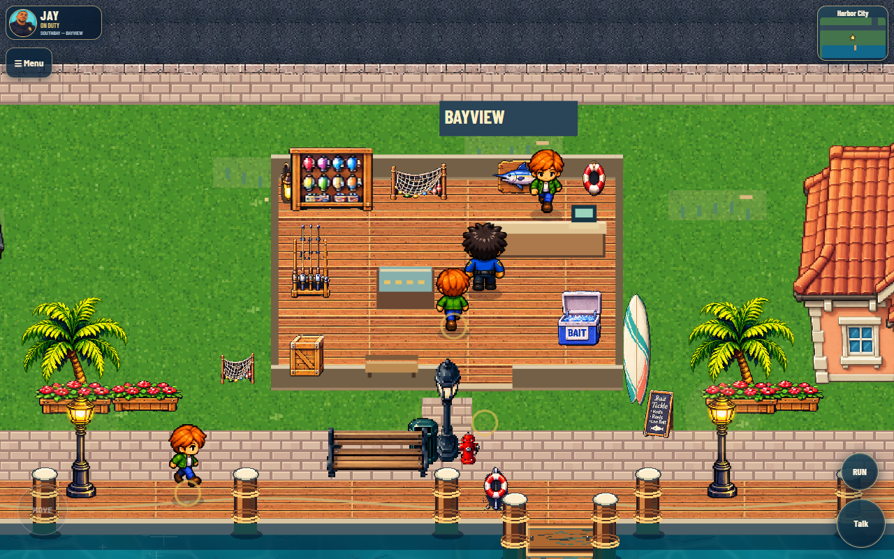
Headless Chrome, no video recording, same camera and zoom. Mobile viewports are emulated. Short local samples are not physical-device benchmarks.
| Build | Viewport | FPS | Frame p95 ms |
|---|---|---|---|
| before | 1280×800 | 44.3 | 33.4 |
| updated | 1280×800 | 41.8 | 33.4 |
| before | 390×844 | 60 | 16.8 |
| updated | 390×844 | 60 | 16.8 |
| before | 844×390 | 60 | 16.8 |
| updated | 844×390 | 60 | 16.8 |
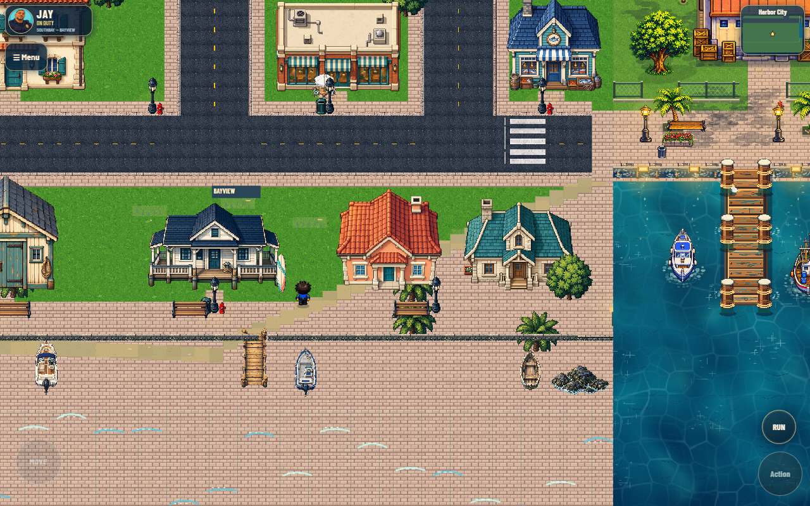
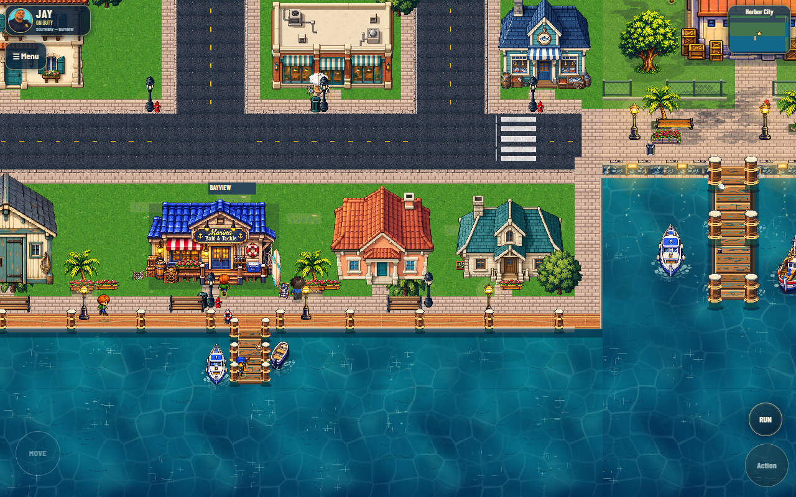
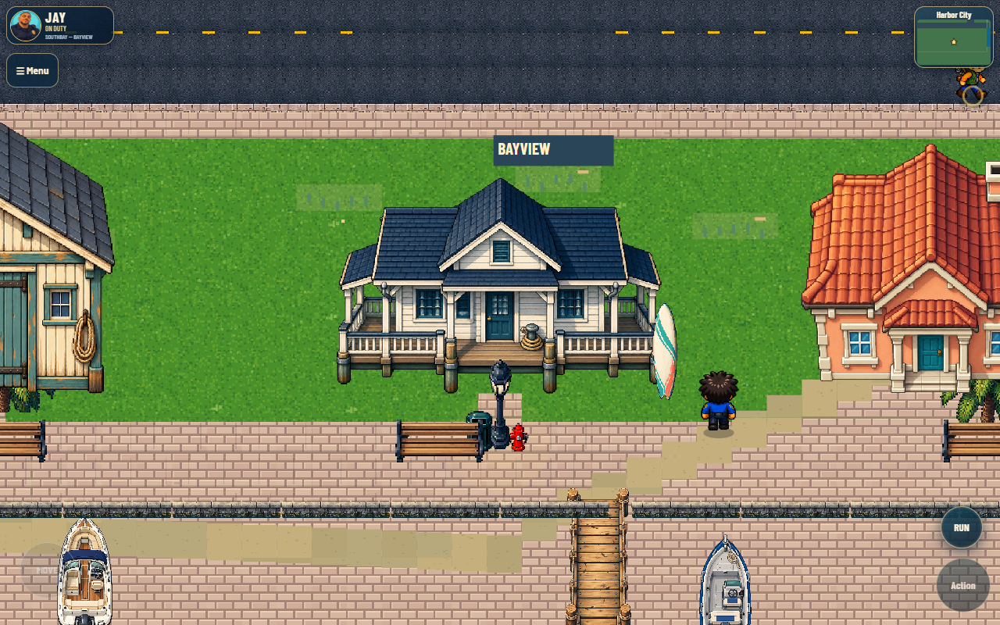
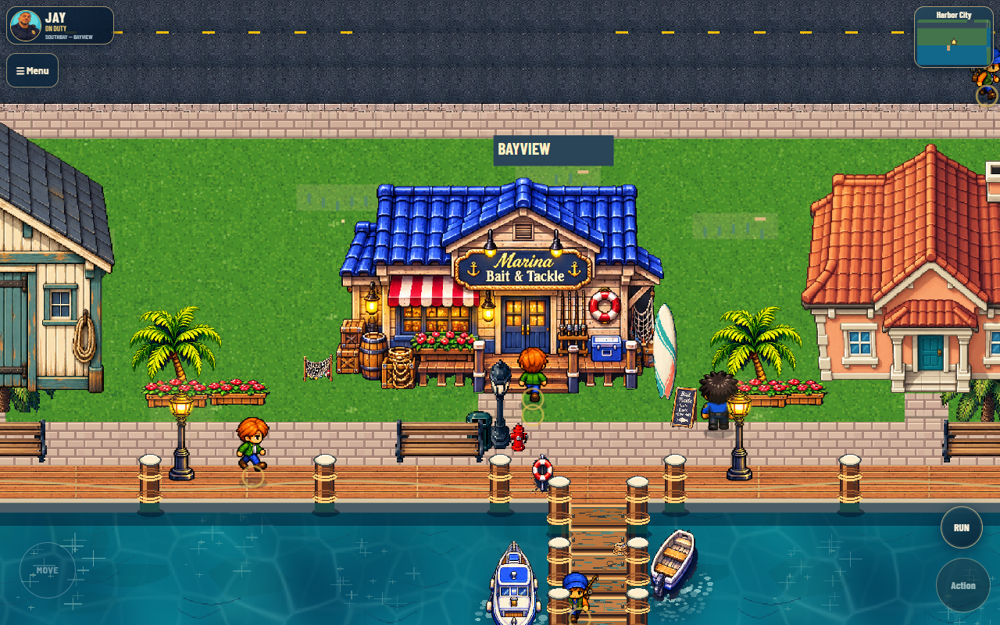
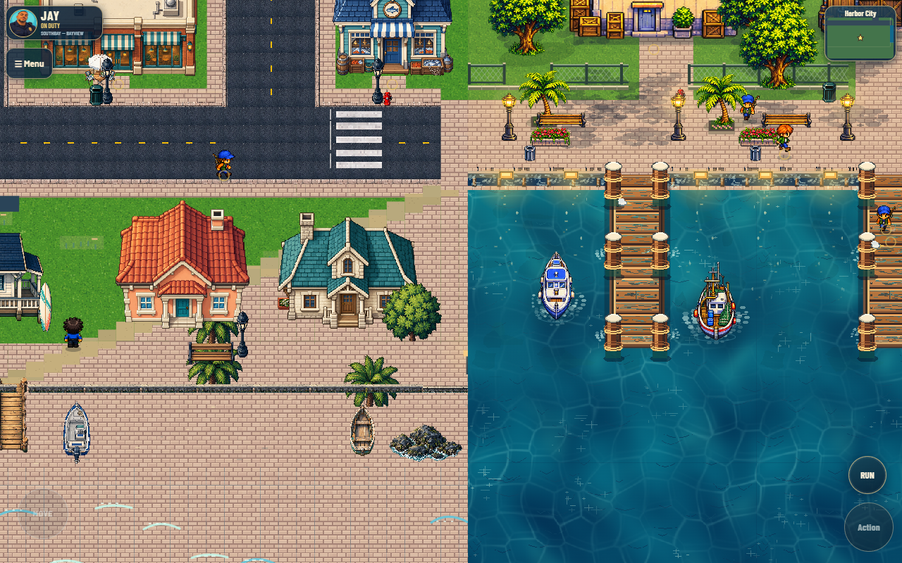
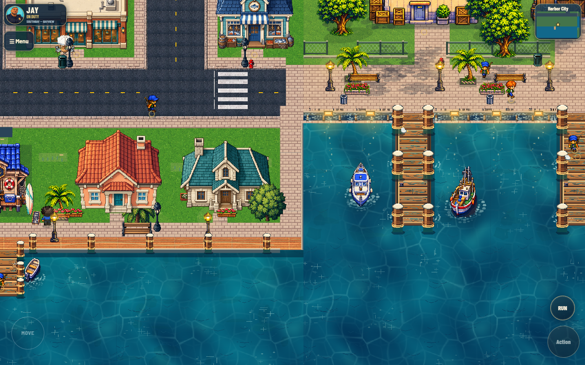
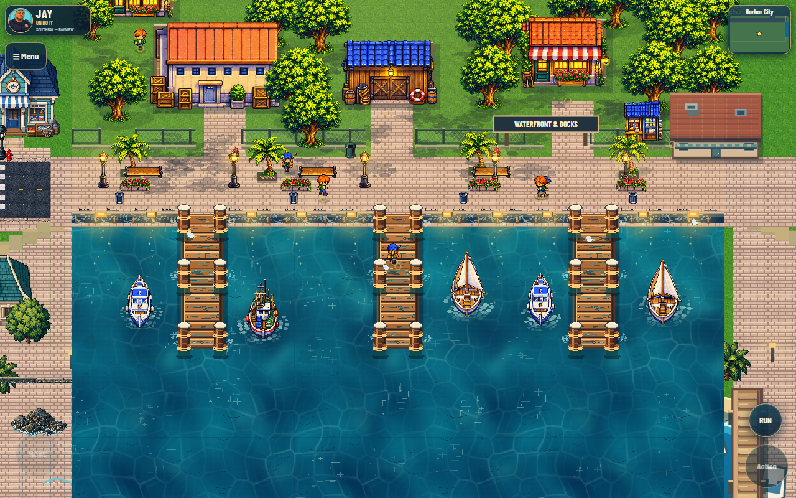
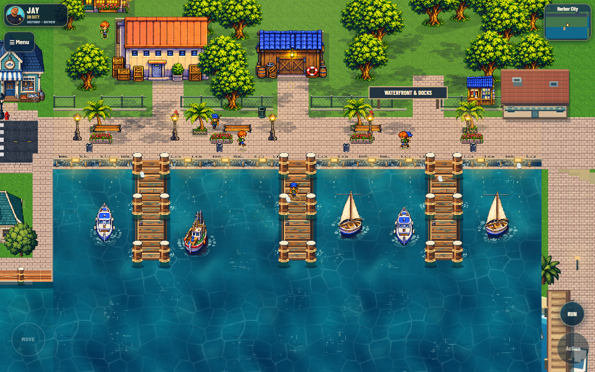
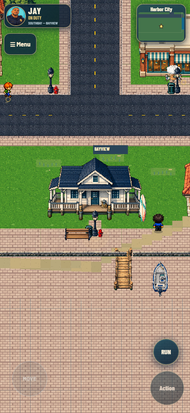
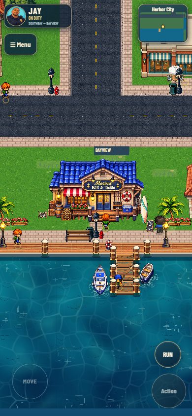
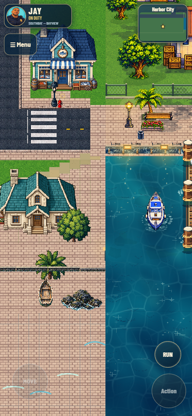
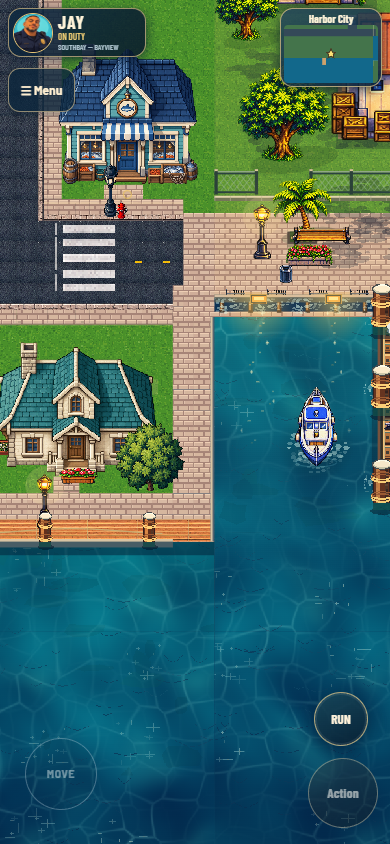
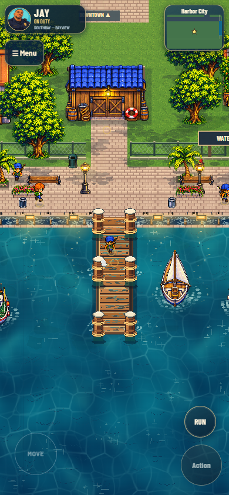